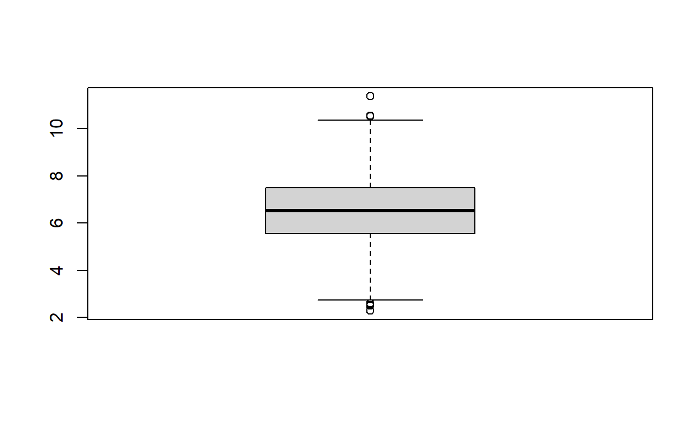

Uitleg over de workflow voor de productie van mijn studieboeken.
Eerst een kort overzicht over de gehele workflow rond de cursusboeken. Daarna wordt op de belangrijkste onderdelen wat meer in detail ingegaan.
Wat de brondocumenten betreft zijn mijn cursusboeken in twee soorten te onderscheiden
Voor de oudere Engelstalige cursusboeken is de opmaak DITA, een XML variant. Voor de productie gebruik ik Oxygen XML Editor, zowel als editor voor de brondocumenten als voor het publiceren in HTML, PDF en EPUB formaat.
De Nederlandstalige cursusboeken zijn geschreven in de taal R Markdown. Dit is platte Markdown tekst met af en toe R-code voor het genereren van sommige grafieken en diagrammen. Markdown is een erg eenvoudige opmaaktaal en R is een (gratis) programmeertaal voor statistische berekeningen en grafieken.
Het vervolg van dit document heeft voornamelijk betrekking op de nieuwe cursusboeken.
Het bijhouden van alle fases van de cursusboeken wordt met versiebeheer gedaan. Het gebruikte versiebeheersysteem is Git, open source en gratis. Dit is lokaal op mijn computers geïnstalleerd. Elk cursusboek is georganiseerd in een project (= een map/directory), dat in versiebeheer ook wel een repository genoemd wordt. De actieve projectmappen, dat zijn die waarin gewerkt wordt, staan op mijn lokale PC. Verder staan alle repositories, zowel de actieve als de inactieve, ook op een NAS (netwerkschijf). Daarnaast staan de repositories van de cursusboeken ook op GitHub, een online platform (cloud), voor iedereen toegankelijk.
Uit de brondocumenten wordt een publicatie gemaakt, meestal in een van de volgende eindformaten: HTML (voor online gebruik), PDF of EPUB. Hiervoor wordt RStudio Desktop gebruikt. De HTML onlineversie is in feite een statische website, een map met inhoud, zonder gebruik van een database en kan op elke webserver geplaatst worden.
Op de lokale computer kun je de onlineversie aanmaken en vervolgens via FTP de outputmap uploaden naar de webserver.
De hosting van de cursusboeken is ondergebracht bij Netlify, een bedrijf voor o.a webhosting, maar eentje die integratie met GitHub aanbiedt. Bij wijzigingen in de repository kan de website automatisch bijgewerkt worden. Voor persoonlijk gebruik is Netlify gratis met een totaal gebruik van 100GB/maand. Upgraden kan, maar daar hangt een prijskaartje aan. Het gebruik wordt gemonitord met Google Analytics.
Markdown is een erg eenvoudige opmaaktaal, zie Wikipedia. Het aantal
tags is beperkt. De bestandsextensie is .md. Wanneer je een
lokaal bestand met een browser opent zie je alleen de platte tekst.
Applicaties kunnen een .md bestand omzetten naar HTML.
Wanneer je op GitHub een .md bestand met de browser open
dan wordt deze automatisch omgezet naar HTML.
Het werken ermee is laagdrempelig. Het schrijven kan met een kladblokprogramma, je ziet dan weliswaar de opmaak in HTML formaat niet. Dat kan wel met een van de vele gratis Markdown editors of met Microsoft’s Visual Studio Code. Zelf gebruik ik RStudio Desktop. Ook zijn er addons voor browsers.
Eerst iets over R zelf..
R is een (gratis) programmeertaal voor statistische berekeningen en grafieken en beschikbaar voor Windows, MacOS en Unix/Linux. Bij de installatie zit een eenvoudige GUI en een console. Via de console kun je R opdrachten intypen en direct laten uitvoeren. Via de Gui kun je een bestand met R opdrachten maken (R-script), opslaan en uitvoeren.
Hieronder een eenvoudig voorbeeld met vier opdrachten. Eerst worden
1000 getallen random getrokken uit een normale verdeling met gemiddelde
6,5 en een standaarddeviatie 1,5. Het resultaat wordt toegekend aan
variabele z. In R is dat een vector met in dit geval 1000
getallen. De opdracht summary geeft een
5-getallensamenvatting van de waarden, waarna een histogram en een
boxplot wordt getekend.
Min. 1st Qu. Median Mean 3rd Qu. Max.
2.285 5.558 6.514 6.524 7.497 11.362 hist(z)
boxplot(z)

Je kunt met de standaard meegeleverde Gui werken, maar veel plezieriger en handiger is het om met RStudio Desktop te werken. Dat is een super IDE van de firma RStudio die als gratis open source editie beschikbaar is. Wanneer je met R werkt kun je eigenlijk niet zonder. Tot zover R zelf.
Een R Markdown bestand (extensie .Rmd) is een Markdown
bestand waarin je ook R code kunt opnemen. Hieruit kan dan een document
geproduceerd worden dat naast de opgemaakte markdown tekst ook de
uitvoer van de R-code bevat, bijvoorbeeld een grafiek. Hierdoor is het
overbodig geworden om deze eerst apart in een programma (R, Excel, …) R
(of Excel) taan te maken om ze daarna samen te voegen met de
teksten.
RStudio heeft hier hulpmiddelen omheen gebouwd om de uitvoer in
verschillende formaten te produceren, zoals HTML, PDF, EPUB, Word, …
Hierdoor heb je de mogelijkheid om jouw analyses om te zetten in
kwalitatief hoogwaardige rapporten, presentaties, dashboards,
tijdschriftartikelen, … Zo is ook de bron van dit document een
.Rmd bestand.
Je hoeft niet perse R-code op te nemen. Het kan ook zonder en alleen Markdown tekst bevatten. Je blijft dan het voordeel houden dat je van de fantastische uitvoermogelijkheden gebruik kunt maken. Voor de cursusboeken is geen R-code nodig. Toch gebruik ik soms R-code om dynamisch grafieken, tabellen en diagrammen te maken.
Versiebeheer is een systeem waarin je veranderingen van bestanden in een werkmap bijhoudt. Je kunt hierdoor steeds zien welke veranderingen er in welke bestanden zijn geweest en door wie die zijn aangebracht. Je kunt ook de werkmap terugzetten naar een eerdere toestand in de tijd, een eerdere versie van de werkmap. Het geeft je de mogelijkheid om te experimenteren, bij succes de veranderingen over te nemen en bij geen succes de veranderingen ongedaan te maken.
Er zijn twee soorten versiebeheersystemen:
Git is een vrij gedistribueerd versiebeheersysteem en is beschikbaar voor Windows, macOS en Unix/Linux. Je moet de Git software installeren op elke computer van waaraf je wilt werken. Na installatie zijn er twee Git clients beschikbaar:
Vanuit deze clients kun je Git-opdrachten uitvoeren. Je moet dan wel de syntax van de opdrachten kennen en letterlijk intypen. Veel programmeurs werken op deze manier.
Gelukkig zijn er ook (gratis) Git GUI clients met meer mogelijkheden, zoals GitKraken (Windows, Mac & Linux) en SourceTree (Windows, Mac). En ook in de RStudio Desktop is een Git client geïntegreerd.
Na elke verandering kun je de laatste twee stappen opnieuw uitvoeren. Zo ontstaat er een keten van wijzigingen.
De aanpassingen zitten nu in de lokale repository. Wanneer je in je eentje aan de bestanden werkt is dit in principe voldoende. Wanneer je een backup wilt of je wilt samenwerken met anderen aan deze bestanden, dan moet er een soort kopie van de repository op een andere lokatie komen waar een Git server geïnstalleerd is. Zo’n lokatie is bijvoorbeeld GitHub. In Git termen heet deze repository een remote repository.
Om dit voor elkaar te krijgen moet er op GitHub een repository worden aangemaakt. Daarna moet je in de lokale repository eenmalig een opdracht gegeven om een verbinding te leggen tussen de lokale en de remote repository. Daarna kun je de aanpassingen in de lokale repository doorsturen naar de remote repository. In Git heet dit een push.
Wanneer iemand anders ook met de bestanden wil werken, dan kan deze persoon de remote repository klonen. Er wordt dan een lokale werkmap gemaakt die de volledige repository bevat, dus met alle bestanden. Veranderingen die in de remote repository ontstaan kunnen weer naar de lokale repository gehaald worden via een pull opdracht.
Uiteraard wordt er goed voor gezorgd dat er geen chaos ontstaat doordat verschillende personen aan hetzelfde bestand werken. Het voert in dit stadium te ver om op alle aspecten dieper in te gaan. Voor uitvoerige documentatie zie het online boek Pro Git
Een andere handigheid is dat je in Git zeer eenvoudig een nieuwe branche (aftakking) kunt maken. Deze aftakking staat los van de hoofdtak (master of main geheten) en je kunt hierin eigen ontwikkelingen doen. Het is mogelijk om zo’n aftakking weer samen te voegen met de hoofdtak.
Voor mijn eigen werk heb ik, zoals de meeste anderen, een branche develop geheten. Hierin voeg ik nieuwe inhoud toe, test het en wanneer het resultaat ok is voeg ik het weer in de hoofdtak.
Wanneer ik een repository van iemand anders naar mijn lokale PC kloon maak ik meestal een nieuwe branch waarin ik dan mijn wijzigingen en aanvullingen aanbreng. Deze branch wordt uiteraard niet samengevoegd met de hoofdbranch want die is van iemand anders. Wat wel kan is een pull request indienen, zie verderop.
GitHub is een online platform dat in eerste instantie bedoeld was voor het plaatsen van bronbestanden voor open source software. Het is gebouwd rond Git en is gaandeweg een zeer groot en geavanceerd ontwikkelplatform geworden. GitHub is in 2018 door Microsoft overgenomen.
Voor het maken van een repository op GitHub moet je eerst een (gratis) account maken. Je kunt er prive repositories plaatsen, maar de meeste repositories zijn public en zijn voor iedereen toegankelijk, in die zin dat je de inhoud kunt bekijken en naar je eigen computer kunt klonen. Voor mijn repositories op GitHub zie: https://github.com/bwelman. De repositories voor mijn cursusboeken zijn allemaal public.
Netlify is een hosting platform met een op Git gebaseerde workflow en uitvoerige mogelijkheden tot integratie met repositories op GitHub. Het proces ziet er schematisch als volgt uit:
Er zijn meerdere mogelijkheden tot samenwerking.
Allereerst heeft de repository site een aantal tabs hiervoor.
Issues en discussions zijn eenvoudig te gebruiken en daar kan ook eigenlijk niets mis gaan. Een pull request is wat ingewikkelder en heeft wat meer uitleg nodig.